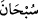
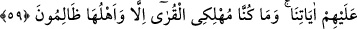

nimet onları azdırmış, küfrâna sevketmiştir. Biz onları helâk edip memleketlerini
harâbeye çevirdik.
“İşte” odur, “yerleri!” İşte onların meskenleri, zulümleri sebebiyle musîbete
uğramış, ıssız ve bomboş kalmış, yolunuzun üzerinde gidip gelirken görmektesiniz.
“Kendilerinden sonra oralarda pek az oturulabilmiştir.” Helâk olmalarından sonra bu
yerlerde pek az oturuldu. Çünkü gelip geçenler ve oralara uğrayanlar ancak bir gün ya
da daha az bir süre oralarda kalırlardı.
Dünya evinde ne oturuyorsun, kalk
Bu ev, gelen gideni olduğu için güzeldir
Muhtemeldir ki, helâk olanların işledikleri günahların uğursuzluğu, bir iz olarak
onların diyarlarında kalmıştır. Bu yüzden arkalarından, o bölgelerde oturan, pek az
kimse dışında kimse kalmamıştır. Çünkü uğursuzluk olan yerde oturmakta bereketsizlik
vardır.
Bazıları demiştir ki: Zehirli hayvanlar, baykuşlar ve böcekler o yerleri mesken
tutmuştur. Bunun için bu hayvanların tesbihi şöyledir: “__WORD__ __WORD__ (Hayy olan
Allah’ı tenzih ve tesbih ederim.)”
Örümcek, Kisrâ’nın sarayında perdedarlık yapmaktadır
Baykuş, Efrasyâb’ın kalesinde nevbet çalmaktadır
“Onlara biz vâris olmuşuzdur.” Onlardan sonra biz bu diyarlara vâris olduk. Çünkü
onlara, diyarlarında ve diğer işlerinde tasarruf edecek kimse halef olmadı. Yani, her
şeyin yok olmasından sonra biziz bâkî. Bu cümle, muhâtablara Allah’dan bir vaîd ve
ihtardır.
59. Rabbin, kendilerine âyetlerimizi okuyan bir peygamberi memleketlerin ana
merkezine göndermedikçe, o memleketleri helâk edici değildir. Zaten biz ancak
halkı zâlim olan memleketleri helâk etmişizdir.
“Rabbin, kendilerine âyetlerimizi okuyan bir peygamberi memleketlerin ana
merkezine göndermedikçe,” bir memleketin helâkı söz konusu olduğunda Rabbinin
adeti; insanları uyarmadan hiç bir zaman onları helâk etmez. Nüfusu kalabalık büyük
şehirlerin merkezinde âyetlerimizi onlara okuyan mutlaka bir peygamber gönderir.
Peygamber gönderilen beldenin nüfusu kalabalık ve büyük bir şehirle tahsis edilmesi;